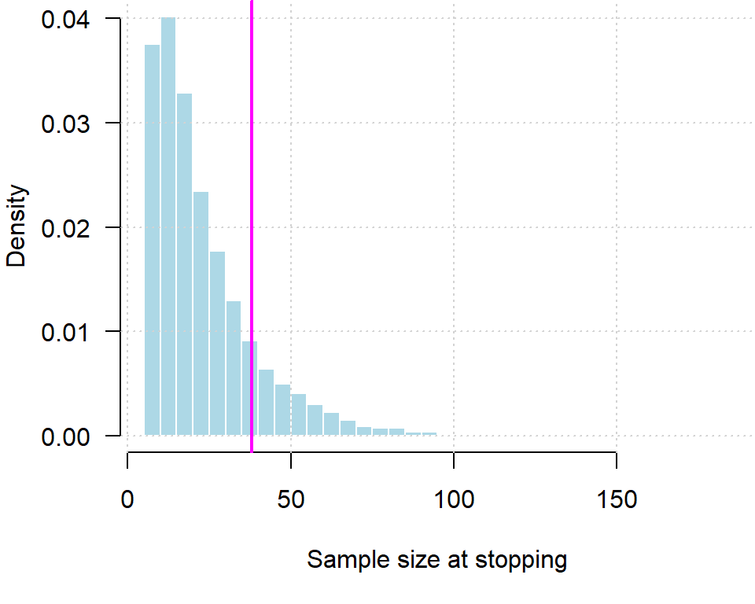
Verifying elections with anytime-valid methods
…and an intro to sequential analysis
Damjan Vukcevic
Statistics seminar, Macquarie University
29 October 2026
Overview
Overview
🔁 Sequential analysis
🗳️ Auditing preferential elections
Acknowledgements 💟
- Michelle Blom
- Alexander Ek
- Floyd Everest
- Jack Freestone
- Dania Freidgeim
- Dennis Leung
- Philip Stark
- Peter Stuckey
- Vanessa Teague
Australian Research Council 💰
- Discovery Project DP220101012
- OPTIMA ITTC IC200100009
Sequential analysis
Sequential probability ratio test (SPRT)

Developed by Wald (1945)
Birth of sequential analysis
Binary data example
Data (X_i): 0, 0, 1, 1, 0, 1, \dots
Hypotheses: \begin{cases} H_0\colon p = p_0 \\ H_1\colon p = p_1 \end{cases}
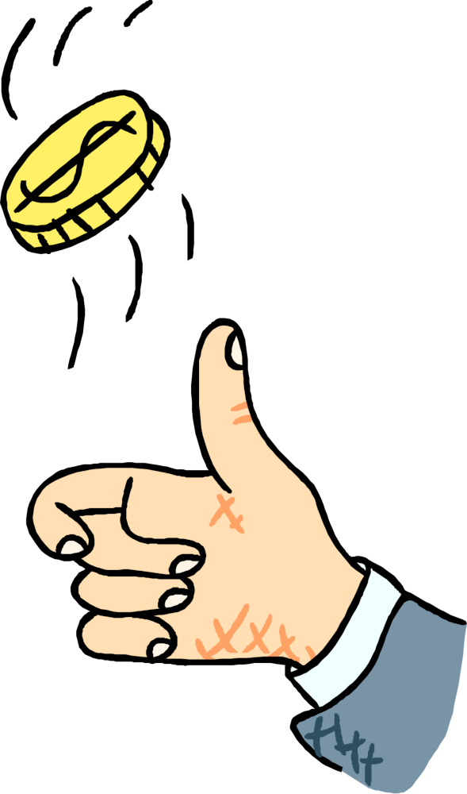
Binary data example
Test statistic: S_t = \frac{L_t(p_1)}{L_t(p_0)} = \frac{\Pr(X_1, \dots, X_t \mid H_1)} {\Pr(X_1, \dots, X_t \mid H_0)} = \frac{p_1^{Y_t} (1 - p_1)^{t - Y_t}} {p_0^{Y_t} (1 - p_0)^{t - Y_t}}
Where: Y_t = \sum_{i=1}^t X_i
Binary data example
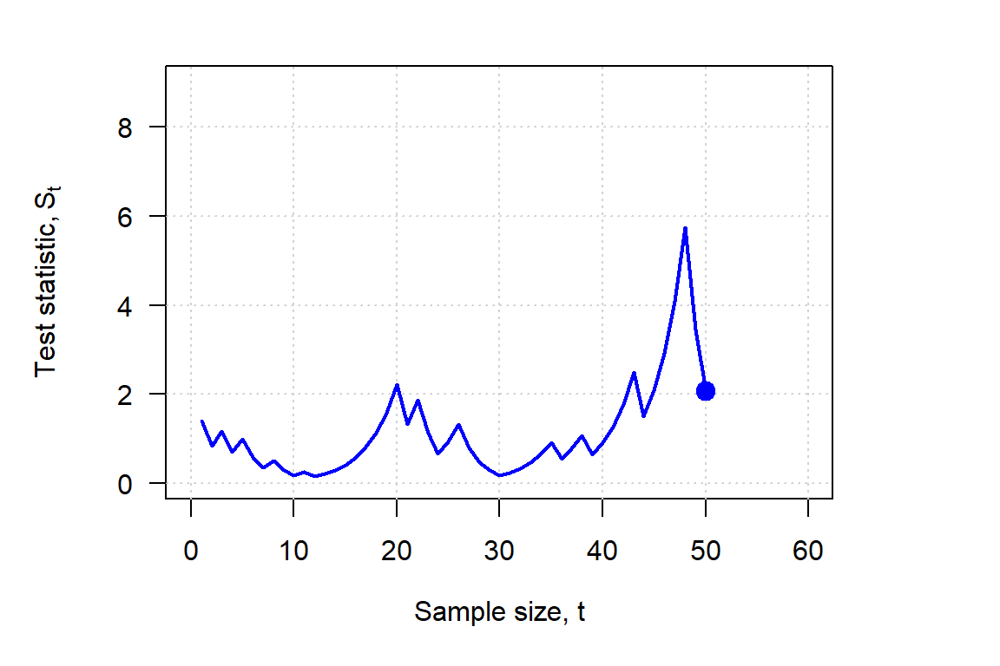
Binary data example
Stopping rule: \begin{cases} S_t \leqslant \frac{\beta}{1 - \alpha} & \Rightarrow \text{accept } H_0 \\ S_t \geqslant \frac{1 - \beta}{\alpha} & \Rightarrow \text{accept } H_1 \\ \text{otherwise} & \Rightarrow \text{keep sampling} \end{cases}
Error control:
- Type 1 error \leqslant \alpha
- Type 2 error \leqslant \beta
Binary data example
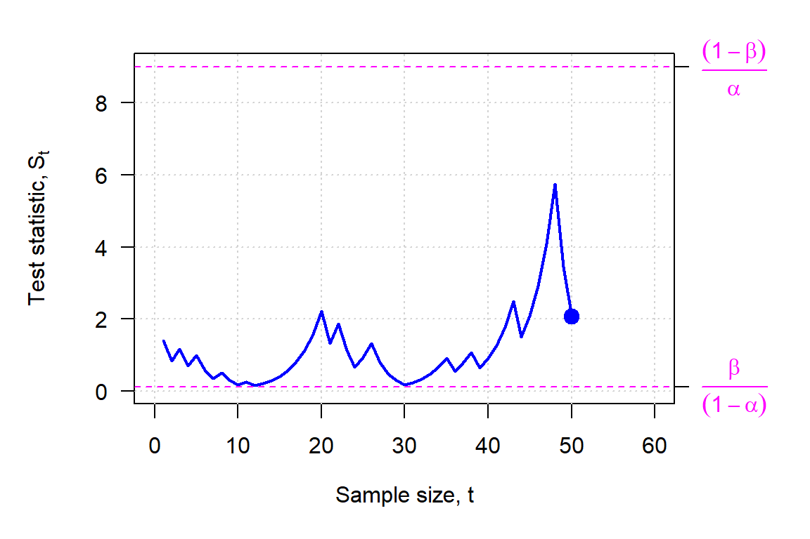
Sample size distribution
Parameters:
- p_0 = 0.5
- p_1 = 0.7 = p
- \alpha = \beta = 0.1
n = 38 for fixed-n test with same power
SPRT often stops earlier
Benefits 👍
- Safe: can “peek” 👁️ at the data
- Efficient: small sample sizes
- Can “accept” H_0
- Principled “no decision” is possible
Disadvantages 👎
- Operational planning more complex
- Sample size unknown in advance
- Sample size could be very large
- Only simple vs simple (for now…)
SPRT in general
H_0\colon X \sim f_0(\cdot) \quad \text{vs} \quad H_1\colon X \sim f_1(\cdot)
Test statistic: S_t = \frac{f_1(X_1, X_2, \dots, X_t)} {f_0(X_1, X_2, \dots, X_t)}
Test statistic, with iid observations: S_t = \prod_{i=1}^t \frac{f_1(X_i)}{f_0(X_i)} = S_{t - 1} \times \frac{f_1(X_t)}{f_0(X_t)}
“Tests of power one”
- Set \beta = 0
- Stopping rule:
Reject H_0 once S_t \geqslant 1 / \alpha - Never “accept” H_0
- No type II error (power = 1), but might have n = \infty.
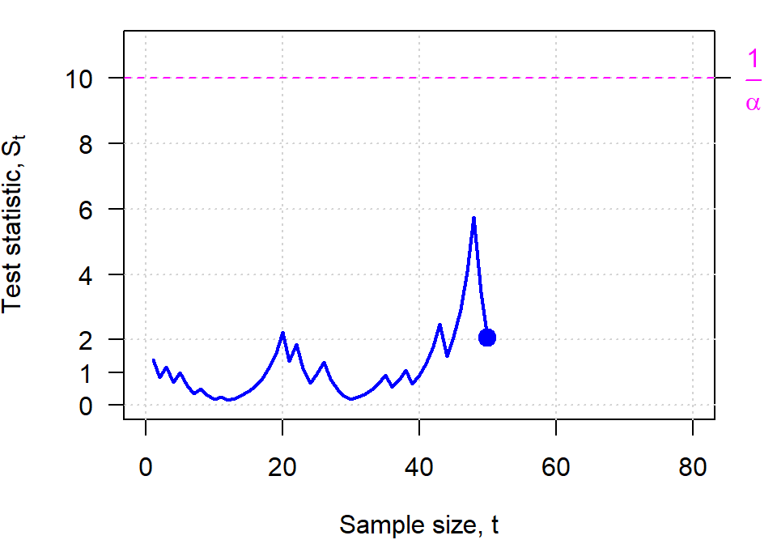
Why is the SPRT “safe”?
Martingale
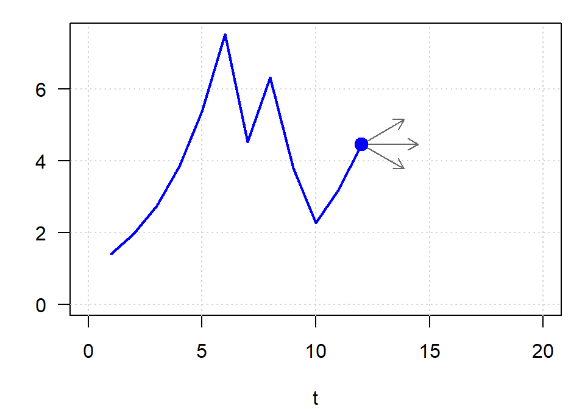
“Stays the same” on average
Supermartingale 🦹
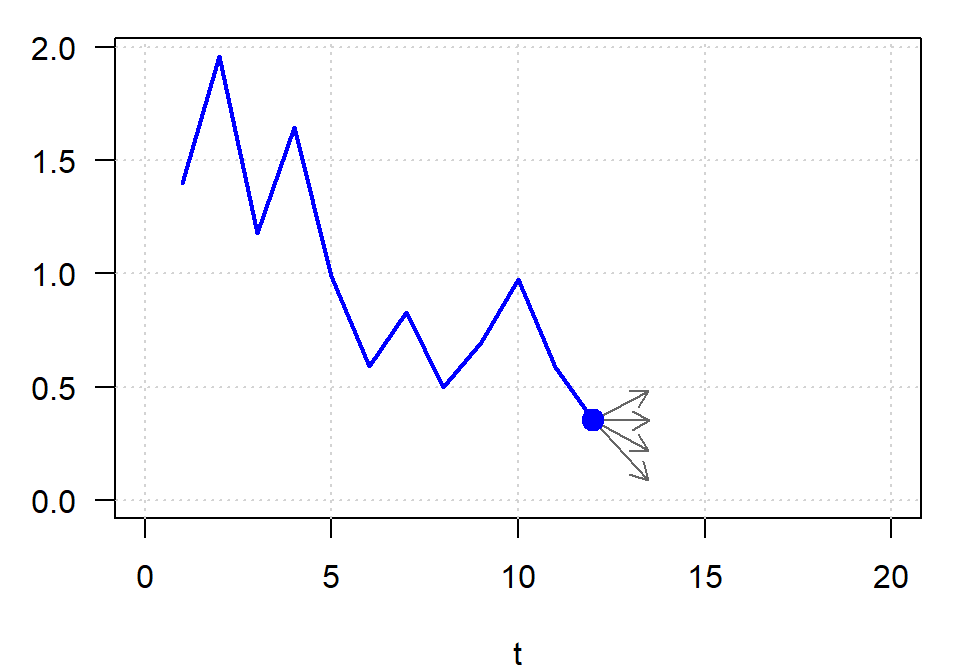
“Stays the same or reduces in value” on average
(Super)martingales
Martingale condition: \mathbb{E}\left(S_{t+1} \mid X_1, \dots, X_t\right) = S_t
Supermartingale condition: \mathbb{E}\left(S_{t+1} \mid X_1, \dots, X_t\right) \leqslant S_t
Ville’s inequality
Let S_0, S_1, S_2, \dots be a test supermartingale (TSM):
has non-negative terms (S_i \geqslant 0) and starting value S_0 = 1.
For any \alpha > 0, \Pr\left(\max_t (S_t) \geqslant \frac{1}{\alpha}\right) \leqslant \alpha
Tests based on martingales
- S_t should be a test supermartingale (TSM) under H_0
- S_t should grow quickly under H_1
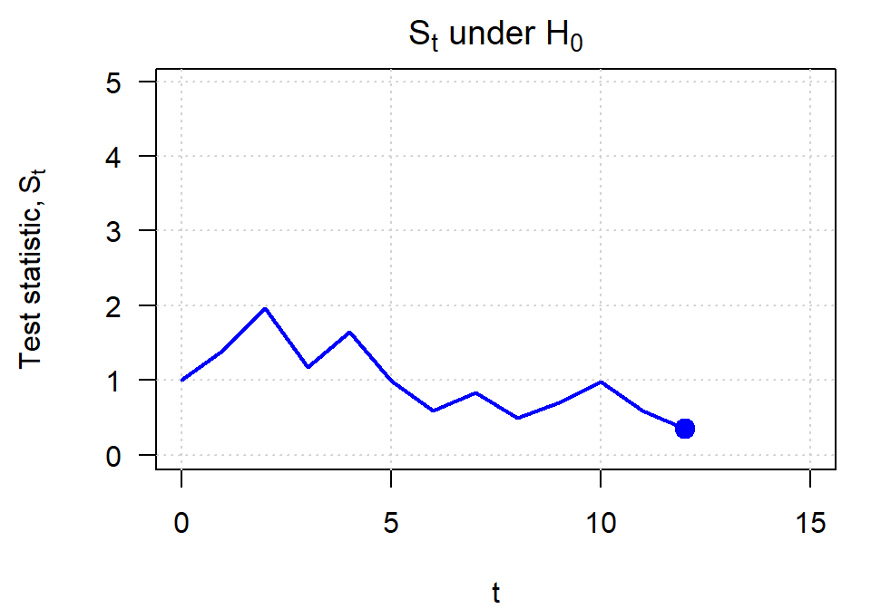
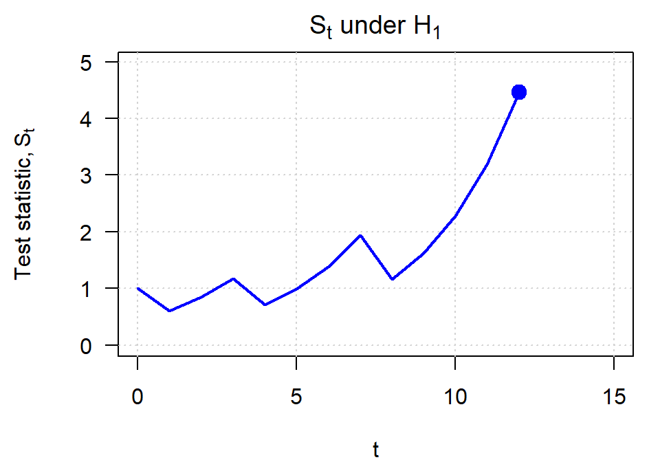
Tests based on martingales
Decision rule:
- Reject H_0 if S_t \geqslant 1 / \alpha
- Otherwise keep sampling (or give up)
Ville’s inequality \Rightarrow anytime-valid type I error control
Growth rate under H_1 \rightarrow statistical efficiency (“power”)
The SPRT is a martingale
At time t: \mathbb{E}_{H_0} \left(\frac{f_1(X_t)}{f_0(X_t)}\right) = \int \frac{f_1(x)}{f_0(x)} f_0(x) \, dx = \int f_1(x) \, dx = 1
This implies the martingale condition.
Beyond simple hypotheses
H_0\colon \theta = \theta_0 \quad \text{vs} \quad H_1\colon \theta \in \mathcal{A}
Plug-in strategy: S_t = S_{t-1} \times \frac{f(X_t \mid \hat\theta_t)}{f(X_t \mid \theta_0)} \hat\theta_t = a(X_1, X_2, \dots, X_{t-1}) \in \mathcal{A}
Beyond simple hypotheses
H_0\colon \theta = \theta_0 \quad \text{vs} \quad H_1\colon \theta \in \mathcal{A}
Mixture strategy: S_t = S_{t-1} \times \frac{\int_{\mathcal{A}} f(X_t \mid \theta) \, g_t(\theta) \, d\theta}{f(X_t \mid \theta_0)} g_t(\theta) \text{ is a distribution over } \mathcal{A} g_t(\theta) \text{ can depend on } X_1, X_2, \dots, X_{t-1}
Further reading
“Safe anytime-valid inference” (SAVI)
Auditing preferential elections
Counting the votes
Counting the votes
Counting the votes
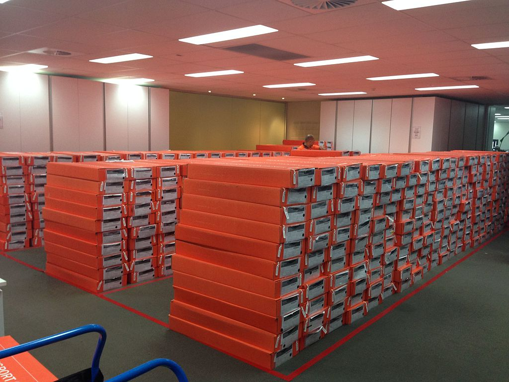
What can go wrong?
- Human error
- Machine malfunction
- Malicious interference
More automation \rightarrow less scrutiny
Election audits
Goal:
- Detect (and correct) wrong election outcomes
How: statistics! 📊
- Sample the ballot papers
- Infer the winners
- Use sequential tests
Two-candidate example
Election: Albo vs Dutton 🤼
p = \text{Proportion of votes for Albo}
\begin{cases} H_0\colon p \leqslant 0.5, & \text{Albo did not win} \\ H_1\colon p > 0.5, & \text{Albo won} \end{cases}
Two-candidate example
SPRT with a plug-in estimator of p:
S_t = S_{t-1} \times \frac{\Pr(X_t \mid \hat{p}_t)}{\Pr(X_t \mid p = 0.5)} \hat{p}_t = h(X_1, \dots, X_{t-1}) \in (0.5, 1]
“ALPHA supermartingale” (Stark 2023)
Preferential elections
Voting
Rank the candidates in order of preference.
Examples
- (1) Thomas, (2) Houying, (3) Jack
- (1) Houying, (2) Thomas, (3) Jack
- (1) Jack, (2) Thomas
- (1) Houying
Counting the votes
Iterative algorithm:
- Eliminate least preferred candidate; redistribute their votes
- Last candidate standing is the winner.
This produces an elimination order.
Example
[Jack, Houying, Thomas]
Thomas is declared the winner
Auditing
H_0 = “someone else won the election”
H_0 includes all elimination orders with
alternative winners (“alt-orders”).
Example alt-orders
[Thomas, Houying, Jack]
[Thomas, Jack, Houying]
[Houying, Thomas, Jack]
[Jack, Thomas, Houying]
Auditing challenge
Need to reject every all-order
k candidates \Rightarrow \sim k! ballot types
k candidates \Rightarrow \sim k! alt-orders
Challenges
- High-dimensional parameter space
- Complex boundary between H_0 and H_1
Auditing strategy
- Decompose H_0 into simpler, 1-dimensional statements
- Test each statement separately
- Combine test results into a single decision
Null decomposition
Enumerate all alt-orders: 1, \dots, m
H_0^i = “alt-order i is true”
H_0 = H_0^1 \cup H_0^2 \cup \dots \cup H_0^m
Must reject every alt-order
Simple statements (“requirements”)
Example:
“Thomas has more votes than Houying assuming that only
candidates in the set \mathcal{S} remain standing.”
Notation:
- DB(Thomas > Houying, \mathcal{S})
Equivalent to a two-candidate election.
Can test using ALPHA.
Testing an alt-order
Alt-order: [Thomas, Houying, Jack]
Requirements:
- DB(Houying > Thomas, {T,H,J})
- DB(Jack > Thomas, {T,H,J})
- DB(Jack > Houying, {H,J})
Alt-order is true \Leftrightarrow all of its requirements are true
Reject at least one requirement \Rightarrow reject the alt-order
Alt-orders as intersections
Alt-order i is an intersection of its requirements: H_0^i = R_i^1 \cap R_i^2 \cap \dots \cap R_i^{r_i}
Simpler, more generic notation: H = H^1 \cap H^2 \cap \dots \cap H^r
Adaptive weighting (for intersections)
Base TSM: for H^j
S_{j,t} = \prod_{i = 1}^t s_{j, i}
Intersection TSM: for H
S_t = \prod_{i = 1}^t \frac{\sum_j w_{j, i} \, s_{j, i}}{\sum_jw_{j, i}}
The weights w_{j, i} can depend on data up until time i - 1.
How to choose the weights w_{j, i}?
Weighting schemes
How to choose the weights w_{j, i}?
Ideas:
- Largest: Put weight 1 on the largest base TSM so far.
- Linear: Proportional to previous value, w_{j, i} = S_{j, i - 1}.
- Quadratic: Proportional to square of previous value, w_{j, i} = S_{j, i - 1}^2.
- Many more…
Compared about 30 schemes. “Largest” was often the best.
Weighting schemes
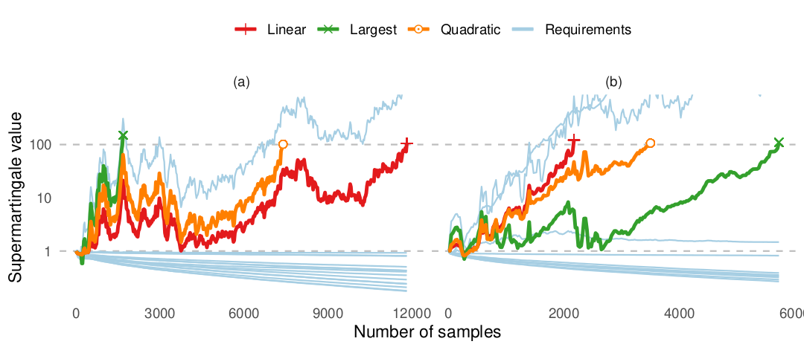
Scaling up
k! alt-orders
\rightarrow 💥 explosion of decompositions & intersections
Use combinatorial optimisation methods…
Suffix trees of partial alt-orders
graph TD
A("[...1]") --> B("[...2,1]")
A("[...1]") --> C("[...3,1]")
A("[...1]") --> D("[...4,1]")
B("[...2,1]") --> E("[4,3,2,1]")
B("[...2,1]") --> F("[3,4,2,1]")
C("[...3,1]") --> G("[4,2,3,1]")
C("[...3,1]") --> H("[2,4,3,1]")
D("[...4,1]") --> I("[3,2,4,1]")
D("[...4,1]") --> J("[2,3,4,1]")
Incremental expansion and pruning
graph TD
A("[...1]") --> B("[...2,1]")
A("[...1]") --> C("[...3,1]")
A("[...1]") --> D("[...4,1]")
B("[...2,1]") --> E("[4,3,2,1]")
B("[...2,1]") --> F("[3,4,2,1]")
style C fill:#fff0f5,stroke:#db7093,color:#db7093
style D fill:#fff0f5,stroke:#db7093,color:#db7093
Computational scale-up
‘Exhaustive’ implementation: up to 6 candidates
‘Incremental’ implementation: 55+ candidates
Ask Jack…
Auditing parliamentary majorities
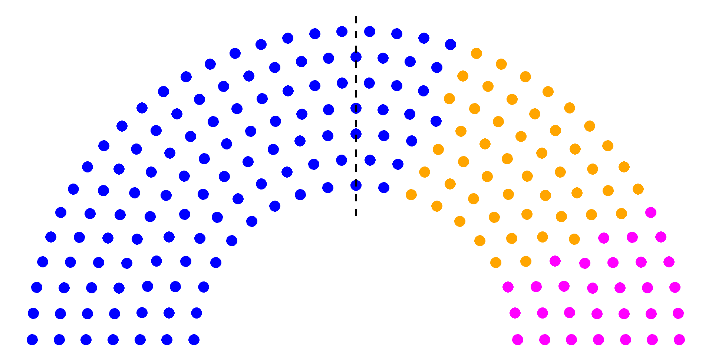
Summary
Sequential analysis allows for “safe” inference
Modern tools use TSMs
Complex inference problems can be tackled sequentially with finite-sample guarantees.
Other modern tools…
- E-values
- E-variables
- E-processes
Questions?
Download
Slides 🖥️ https://dvukcevic.github.io/macquarie-seminar-oct2026/
Papers 📑 Ek et al. (2023; 2024)
Software 💽 https://github.com/aekh/AWAIRE
References 📚
Chugg, Ramdas, Grünwald (2026). E-values as statistical evidence: A comparison to Bayes factors, likelihoods, and p-values. arXiv:2603.24421.
Ek, Blom, Stark, Stuckey, Vukcevic (2024). Improving the Computational Efficiency of Adaptive Audits of IRV Elections. In: Electronic Voting. E-Vote-ID 2024. Lecture Notes in Computer Science 15014:37–53.
Ek, Stark, Stuckey, Vukcevic (2023). Adaptively Weighted Audits of Instant-Runoff Voting Elections: AWAIRE. In: Electronic Voting. E-Vote-ID 2023. Lecture Notes in Computer Science 14230:35–51.
Ramdas, Grünwald, Vovk, Shafer (2023). Game-Theoretic Statistics and Safe Anytime-Valid Inference. Statist. Sci. 38(4):576–601.
Stark (2023). ALPHA: Audit that learns from previously hand-audited ballots. Ann. Appl. Stat. 17(1):641–679.
Wald (1945). Sequential tests of statistical hypotheses. Ann. Math. Stat. 16(2):117–186.
Image sources 🖼️
The coin flipping graphic was designed by Wannapik.
The following photographs were provided by the Australian Electoral Commission and licensed under CC BY 3.0:


The Higgins ballot paper (available from The Conversation) was originally provided by Hshook/Wikimedia Commons and is licensed under CC BY-SA 4.0.

The photograph of Abraham Wald is freely available from Wikipedia.

The photograph of the 18th century print is freely available from the Digital Commonwealth; the original sits at the Boston Public Library.
Appendix
Binary data example
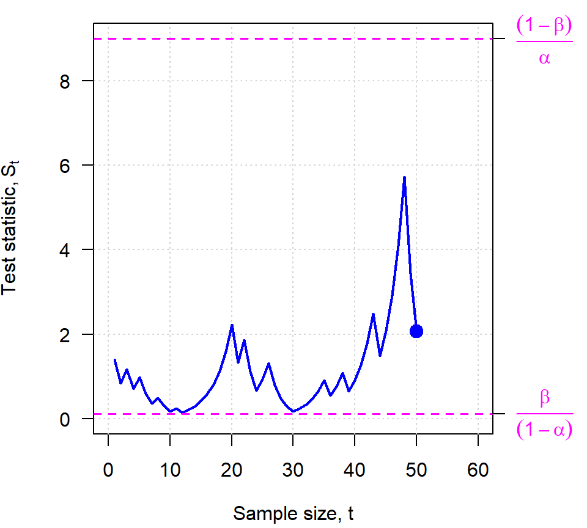
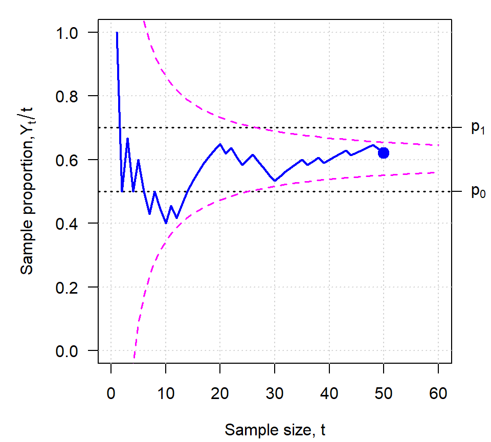
Martingales: origin
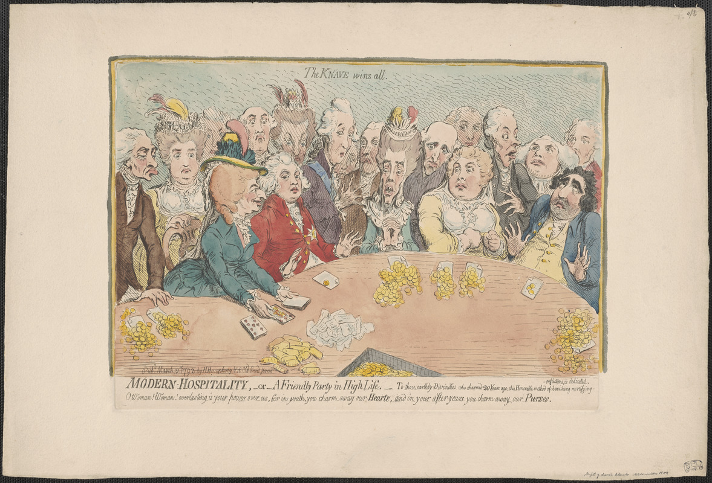
Martingales: origin
“Martingales”: 🎲 gambling strategies from 18th century France ♣️
These strategies cannot “beat the house”.
Martingales (in mathematics): represent the 💰 wealth over time of a gambler playing a fair game.
Betting analogy
Test statistic: S_t, a TSM under H_0
Intrepretation:
- S_t is the wealth of a gambler betting against H_0
- The gambler starts with $1
- They can vary their bets based on past data.
Gambler gets rich \rightarrow evidence against H_0
Ville’s inequality: “one in a million chance of becoming a millionaire”
E-variable
- A non-negative statistic E with: \mathbb{E}_{H_0}(E) \leqslant 1
- Betting analogy: payoff from a $1 bet in a (sub-)fair game
- Statistical interpretation: evidence against H_0
- Large E → strong evidence against H_0
- A realisation of E is an e-value.
Markov’s inequality
Let S be a non-negative random variable (S \geqslant 0).
For any \alpha > 0, \Pr\left(S \geqslant \frac{1}{\alpha}\right) \leqslant \alpha \cdot \mathbb{E}(S)
Let S = E, an e-variable. Under H_0 we have: \Pr\left(E \geqslant \frac{1}{\alpha}\right) \leqslant \alpha
Testing using e-values
Reject H_0 if E \geqslant 1 / \alpha
Markov’s inequality \Rightarrow type I error control
Note
- Alternative to using a p-value
- Generalises a likelihood ratio
Combining e-variables
A, B, C are e-variables
A, B, C independent \Rightarrow the product is an e-variable: E = A \cdot B \cdot C
The average is always an e-variable: E = \frac{A + B + C}{3}
(Easier than combining p-values!)
E-process
- Similar to a test supermartingale, but more general
- Sequence (E_t) with \mathbb{E}_{H_0}(E_\tau) \leqslant 1, \quad \text{for all stopping times } \tau.
- Connection with TSMs: E_t \leqslant \inf_{P \in H_0} S_t^{(P)}, \quad \text{where } S_t^{(P)} \text{ is a TSM for } P.
- Betting analogy: minimum wealth across simultaneous betting games
- Statistical interpretation: accumulated evidence against H_0
- Ville’s inequality applies
- Stop anytime → type I error control
Further reading
- E-values as statistical evidence
- Comparison with Bayes factors, likelihood ratios and p-values
P-values from e-values
P_t = \frac{1}{E_t}
E_t > \frac{1}{\alpha} \quad \Longleftrightarrow \quad P_t < \alpha
- P_t is an anytime-valid p-variable.
- A realisation of P_t is an anytime-valid p-value.
Confidence sequences
Fixed-sample hypothesis test \longleftrightarrow confidence interval (CI)
Sequential hypothesis test \longleftrightarrow confidence sequence (CS)
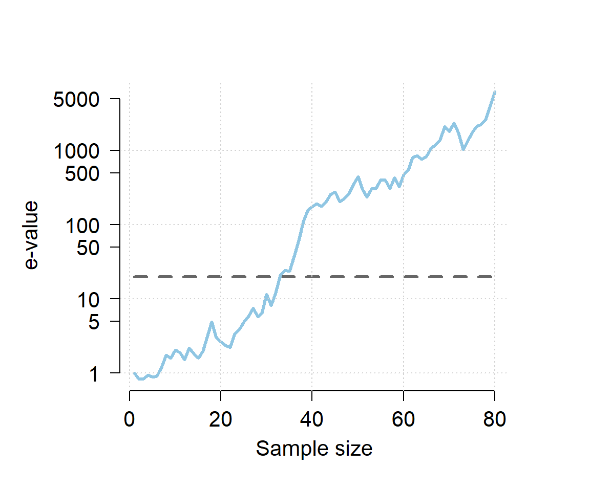
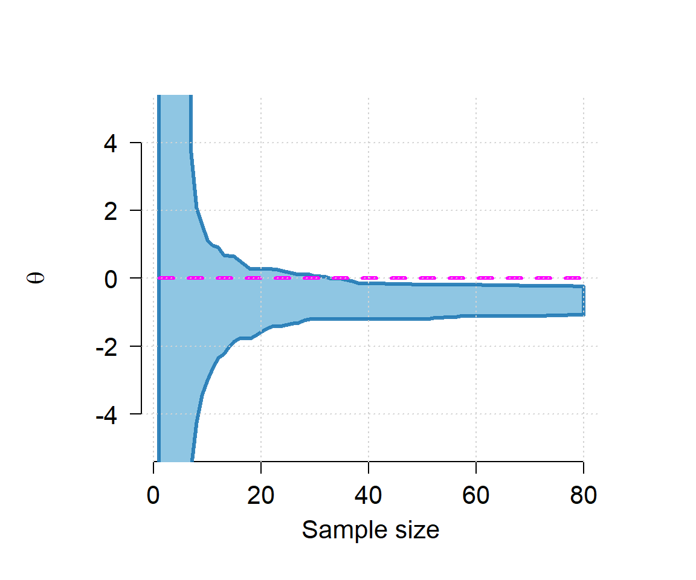
Don’t trust your scanner
Xerox bug 🐛:


Source: https://www.dkriesel.com/
AWAIRE performance
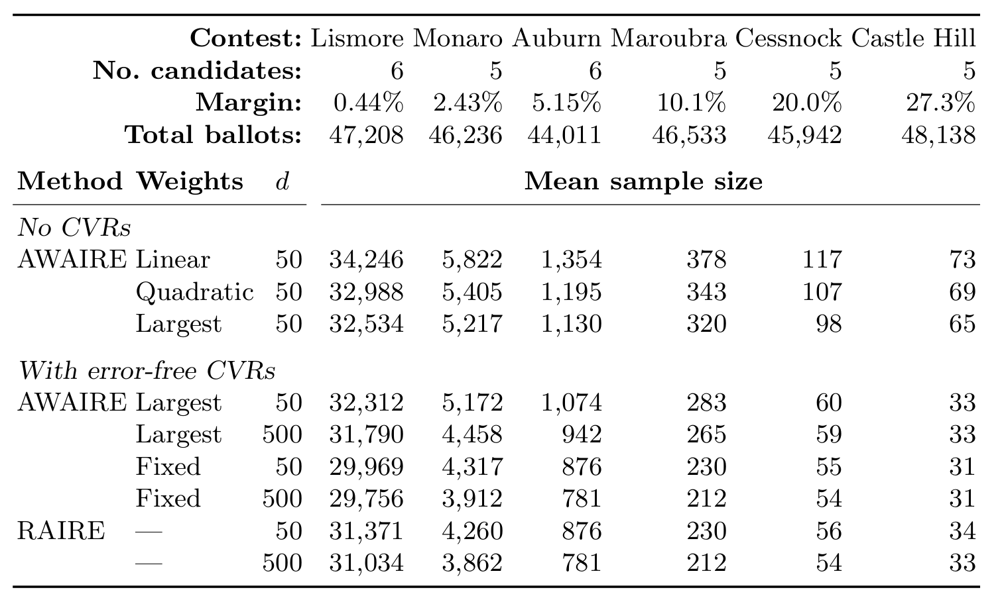
“E-hacking”
Reanalysing the data with different test statistics (“betting strategies”) and only reporting the best one.
This is not safe stats.
Fundamental principle:
Declare your bet before you play.
Pre-registration is still an important tool.
However, anytime-valid methods retain flexibility even after pre-specification.
Research frontiers, in sequential analysis
- Improving efficiency (“power”)
- Complex, high-dimensional models
- Beyond iid/exchangeable data
- Connections with Bayesian approaches